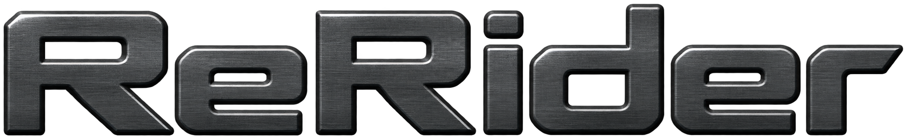

GAIN RIDING

Timeline-aware level control
ReRider combines slow bidirectional level placement, gentle bilateral compression, and an optional assertive SLAM stage. Its timeline memory learns previously played material so Stage 1 can prepare for known level changes without delaying audio.
Latest releaseWindows VST3macOS AU + VST3
Download ReRider

Downloads
Loading available versions…